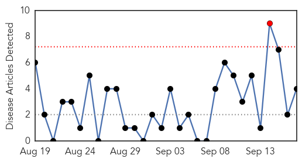
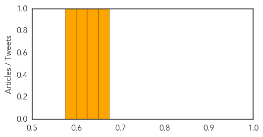
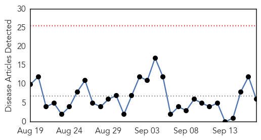
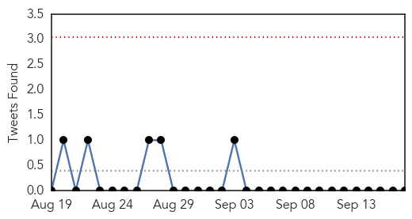
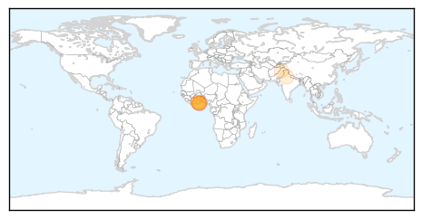
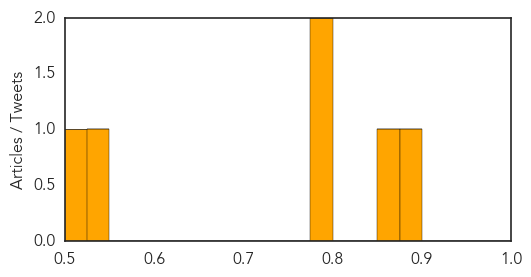

Measles
30-Day Web Trend
1 alerts, 0 warnings

30-Day Twitter Trend
0 alerts, 0 warnings

Article Locations

Article Confidences
Top Articles:
Top Tweets:
-
No tweets found for Sep 17, 2014
Cholera
30-Day Web Trend
0 alerts, 0 warnings

30-Day Twitter Trend
0 alerts, 0 warnings

Article Locations
Article Confidences
Top Articles:
- 0.882
- Stop politicizing health issues
- 0.863
- Cholera outbreak in Ghana is unacceptable – Union
- 0.792
- HSWU Express Worry About Cholera
- 0.792
- Cholera outbreak in Ghana is unacceptable- union
- 0.542
- Dirty water raising health risk in flooded occupied Kashmir
- 0.509
- Water level fails to recede, people worried about safety of houses
Top Tweets:
-
No tweets found for Sep 17, 2014